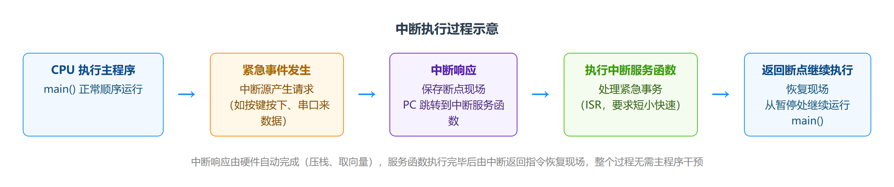
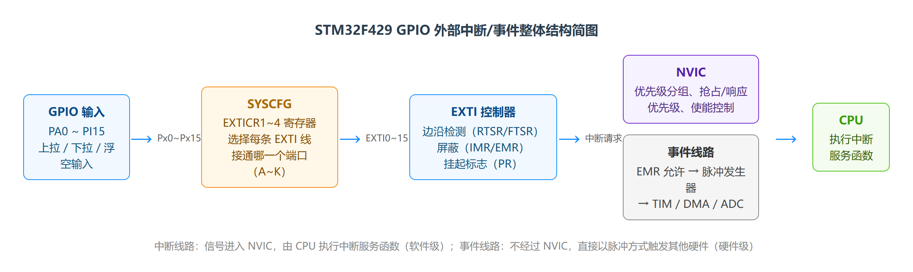
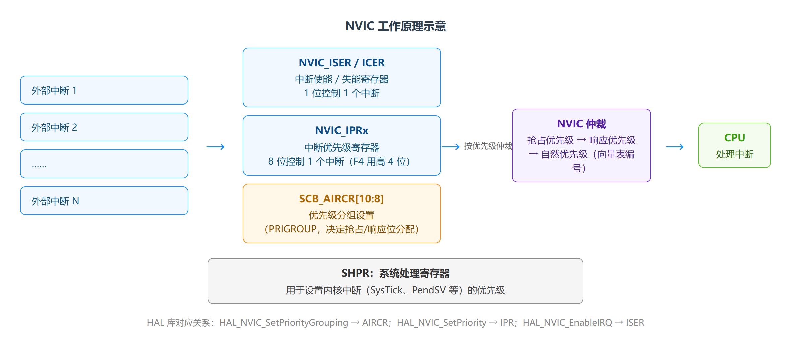
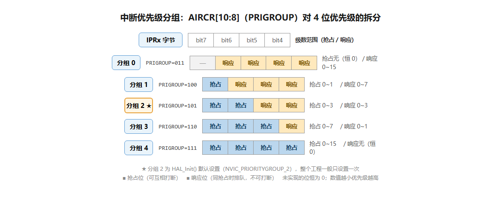
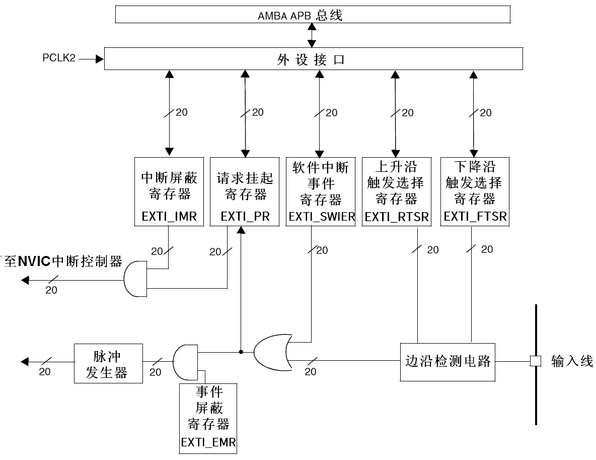
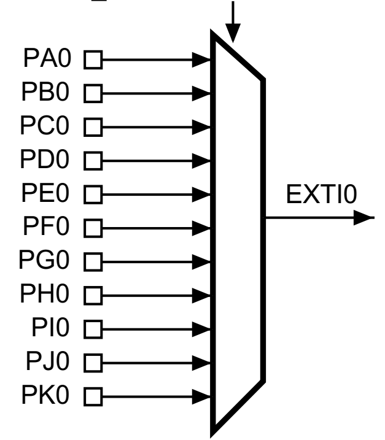
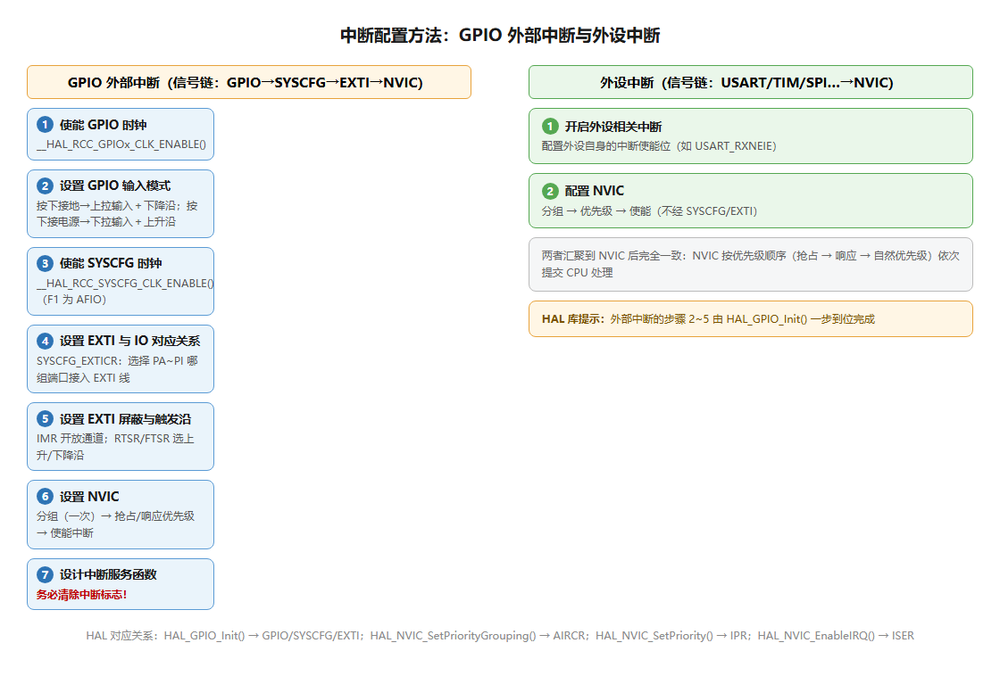
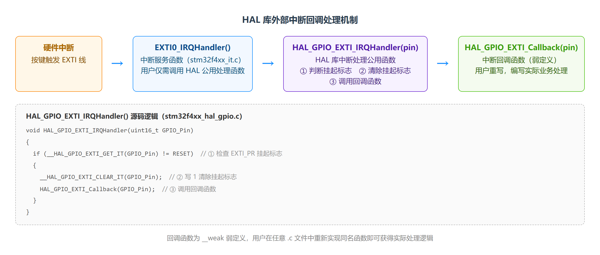
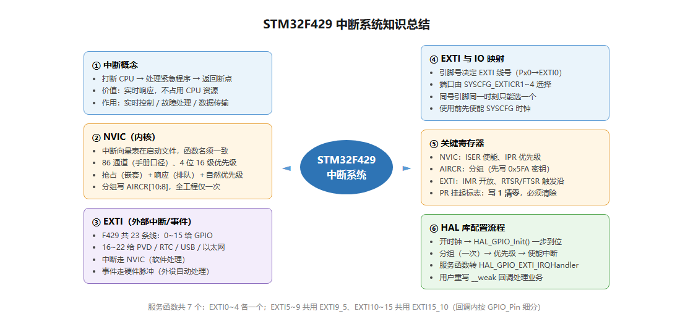

1 中断概述
- 中断概述：什么是中断、中断的作用与意义、F429 中断体系概览
- NVIC 详解：基本概念、中断向量表、工作原理、优先级概念、优先级分组与使用方法
- EXTI 详解：基本概念、主要特性、工作原理（框图）、中断/事件线
- EXTI 与 IO 映射关系：SYSCFG 简介、映射规则
- 中断相关寄存器：NVIC / EXTI / EXTICR 寄存器的位定义与使用方法
- 中断配置方法：使用中断的通用流程
- HAL 库中断配置详解：配置步骤、服务函数、回调机制、编程实战
- 小结
1.1 什么是中断
打断 CPU 执行正常的程序，转而处理紧急程序，然后返回原暂停的程序继续运行，这个过程就叫中断（Interrupt）。生活中的例子：正在做作业时电话响了（中断请求），先去接电话（执行中断服务程序），接完电话回来继续做作业（返回断点继续执行）。

1.2 中断的作用与意义
● 实时控制 在确定时间内对响应事件作出响应，例如温度监控超限报警。
● 故障处理 检测到故障时需要第一时间处理，例如电梯门夹到人必须立即响应。
● 数据传输 不确定数据何时会来，例如串口数据接收，用轮询方式会浪费大量 CPU 资源。
中断的意义：高效处理紧急程序，不需要一直占用 CPU 资源。没有中断时 CPU 只能不断轮询查询状态，有了中断，CPU 平时可以处理其他任务，事件到来时才被"打断"。
1.3 F429 中断体系概览
Cortex-M4 内核搭载了一个异常响应系统，STM32F429 在内核层面支持 10 个系统异常，在芯片层面通过 NVIC 管理多达 86 个可屏蔽外部中断通道（《STM32F4xx 中文参考手册》第 10 章）。系统异常与外部中断统一编排在中断向量表中，异常和中断的处理机制是统一的，本教程如无特别说明，不严格区分"异常"与"中断"。
下表节选了 F429 向量表中的系统异常部分（完整内容见参考手册表 45/表 46）：
| 优先级编号 | 优先级类型 | 名称 | 说明 | 向量地址 |
|---|---|---|---|---|
| -3 | 固定 | Reset | 复位 | 0x0000 0004 |
| -2 | 固定 | NMI | 不可屏蔽中断（RCC 时钟安全系统 CSS 连接到 NMI 向量） | 0x0000 0008 |
| -1 | 固定 | HardFault | 所有类型的错误 | 0x0000 000C |
| 0 | 可设置 | MemManage | 存储器管理 | 0x0000 0010 |
| 1 | 可设置 | BusFault | 预取指失败、存储器访问失败 | 0x0000 0014 |
| 2 | 可设置 | UsageFault | 未定义的指令或非法状态 | 0x0000 0018 |
| 3 | 可设置 | SVCall | 通过 SWI 指令调用的系统服务 | 0x0000 002C |
| 5 | 可设置 | PendSV | 可挂起的系统服务 | 0x0000 0038 |
| 6 | 可设置 | SysTick | 系统嘀嗒定时器 | 0x0000 003C |
外部中断部分节选（手册表 46 自位置 0 排至位置 86，下表节选常用行）：
| 位置 | 优先级 | 名称 | 说明 | 向量地址 |
|---|---|---|---|---|
| 0 | 7 | WWDG | 窗口看门狗中断 | 0x0000 0040 |
| 1 | 8 | PVD | 连接到 EXTI 线 16 的可编程电压检测中断 | 0x0000 0044 |
| 6 | 13 | EXTI0 | EXTI 线 0 中断 | 0x0000 0058 |
| 7 | 14 | EXTI1 | EXTI 线 1 中断 | 0x0000 005C |
| 10 | 17 | EXTI4 | EXTI 线 4 中断 | 0x0000 0068 |
| 23 | 30 | EXTI9_5 | EXTI 线 [9:5] 中断 | 0x0000 009C |
| 37 | 44 | USART1 | USART1 全局中断 | 0x0000 00D4 |
| 40 | 47 | EXTI15_10 | EXTI 线 [15:10] 中断 | 0x0000 00E0 |
| 86 | 93 | SPI6 | SPI6 全局中断 | 0x0000 0198 |
所有外设（USART、TIM、SPI、DMA、ADC……）都可以产生中断，EXTI 外部中断只是其中之一。这些中断最终都汇聚到 NVIC 统一管理。以最常用的 GPIO 外部中断为例，其信号链路如下：

中断 = 打断正常程序 → 处理紧急事务 → 返回断点继续执行；核心价值是实时响应且不浪费 CPU 资源。F429 的系统异常与外部中断由向量表统一编排、NVIC 统一管理。
2 NVIC 详解
2.1 NVIC 基本概念
NVIC（Nested Vectored Interrupt Controller），即嵌套向量中断控制器，属于 Cortex-M4 内核的一部分，与 CPU 内核紧密耦合，控制着芯片中断相关的所有功能。各芯片厂商在设计芯片时会对内核的 NVIC 进行裁剪，因此 STM32 的 NVIC 是 Cortex-M4 NVIC 的一个子集。
NVIC 最多支持 256 个中断（16 内核异常 + 240 外部中断）和 256 个优先级（8 位），但允许裁剪。STM32F429 实际使用情况（《STM32F4xx 中文参考手册》10.1.1 节）：
— F42x/F43x 系列具有多达 86 个可屏蔽中断通道（不包括 Cortex-M4F 的 16 根内核中断线）；
— 使用 4 位中断优先级，即仅有 16 级可编程优先级；
— 低延迟异常和中断处理、支持晚到中断的高效处理。
参考课件给出的常见 STM32 型号中断资源对比（内核中断均 10 个、优先级均为 16 级）：
| STM32 型号 | 内核中断 | 外部中断 | 中断优先级 |
|---|---|---|---|
| STM32F103xx | 10 | 60 | 16 |
| STM32F407xx | 10 | 82 | 16 |
| STM32F429xx | 10 | 91 | 16 |
| STM32F750xx | 10 | 98 | 16 |
| STM32F767xx | 10 | 110 | 16 |
2.2 中断向量表
中断向量表（Vector Table）是定义在固定内存中的一块区域，以 4 字节对齐，存放着各个中断服务函数入口地址。中断向量表定义在启动文件（startup_stm32f429xx.s）中，当发生中断时，CPU 自动根据中断号查表跳转到对应的中断服务函数执行。
向量表本质是一个 32 位整数数组，下标对应中断号，元素的值就是该中断服务函数的入口地址。例如发生了 EXTI0 中断（位置编号 6），NVIC 在外部中断区基址 0x0000 0040 的基础上计算偏移量 6×4=24 字节，从 0x0000 0058 处取出 EXTI0_IRQHandler 的入口地址并跳入执行。注意：地址 0x0000 0000 处存放的并不是服务函数地址，而是复位后主堆栈指针 MSP 的初始值，真正的第一个异常入口（Reset_Handler）存放在 0x0000 0004 处——这一点与第 3 篇《启动过程》中的内容相呼应。
启动文件中已为每个中断预先填好了默认（空）服务函数。若用户编写的中断服务函数名与向量表中不一致，中断发生时将跳入启动文件中的死循环空函数，导致程序"卡死"。
2.3 NVIC 工作原理
NVIC 通过三组关键寄存器协同工作：ISER/ICER 控制"中断能不能进来"，IPR 决定"谁先处理"，AIRCR 中的分组位决定优先级如何划分。

2.4 STM32 中断优先级基本概念
STM32 中断优先级有三个层次：
● 抢占优先级（Preemption Priority） 高抢占优先级可以打断正在执行的低抢占优先级中断，形成中断嵌套。
● 响应优先级（Sub Priority） 当两个中断的抢占优先级相同时，响应优先级高的先执行；但响应优先级不能互相打断。
● 自然优先级 当抢占优先级和响应优先级都相同时，向量表中位置编号越小的（自然优先级越高的）先执行。
举例（假设使用分组 2）：设 EXTI0 抢占 0/响应 0，SysTick 抢占 0/响应 1，EXTI1 抢占 1/响应 0，RTC 抢占 1/响应 1。则 EXTI1 和 RTC 均可打断 EXTI0 与 SysTick（抢占优先级高），而 EXTI0 与 SysTick 之间、EXTI1 与 RTC 之间互相不能打断，只能按响应优先级排队。
2.5 STM32 中断优先级分组
F429 使用 4 位（bit[7:4]）表达中断优先级，这 4 位又被划分为抢占优先级和响应优先级两部分，划分方式由内核外设 SCB 的应用程序中断及复位控制寄存器 AIRCR 的 PRIGROUP[10:8] 位决定，共分为 5 组：
| 分组 | PRIGROUP[10:8] | 抢占优先级位数 | 响应优先级位数 | 抢占级数 | 响应级数 |
|---|---|---|---|---|---|
| 0 | 0b011 | 0 位 | 4 位 | 0~0 | 0~15 |
| 1 | 0b100 | 1 位 | 3 位 | 0~1 | 0~7 |
| 2 | 0b101 | 2 位 | 2 位 | 0~3 | 0~3 |
| 3 | 0b110 | 3 位 | 1 位 | 0~7 | 0~1 |
| 4 | 0b111 | 4 位 | 0 位 | 0~15 | 0~0 |

2.6 STM32 NVIC 的使用
配置一个中断的 NVIC，只需三步：
- 1设置中断分组 写 AIRCR[10:8]，HAL 库函数 HAL_NVIC_SetPriorityGrouping()，整个工程仅需一次；
- 2设置中断优先级 写 IPRx bit[7:4]，HAL 库函数 HAL_NVIC_SetPriority()；
- 3使能中断 写 ISERx，HAL 库函数 HAL_NVIC_EnableIRQ()。
NVIC 是内核的嵌套向量中断控制器，通过向量表索引中断服务函数；F429 有 86 个可屏蔽中断通道、4 位优先级（16 级）；优先级 = 抢占（可嵌套打断）+ 响应（排队不嵌套）+ 自然优先级（编号小者优先）；分组由 AIRCR[10:8] 决定，一个工程只设一次。
3 EXTI 详解
3.1 EXTI 基本概念
EXTI（External interrupt/event Controller），即外部中断/事件控制器。STM32F429 的 EXTI 包含 23 个用于产生事件/中断请求的边沿检测器，即 23 条 EXTI 线，每条线都可以单独配置触发方式和屏蔽。
EXTI 有两个输出方向，需要区分"中断"与"事件"两个概念：
● 中断（Interrupt） 信号要进入 NVIC，有相应的中断服务函数，需要 CPU 参与处理，属于"软件级"。
● 事件（Event） 不进入 NVIC，仅由内部硬件自动完成，如触发 TIM、DMA、ADC 等，属于"硬件级"，响应速度更快。
3.2 EXTI 主要特性
每条 EXTI 线都可以独立配置：
— 选择类型（中断或者事件）；
— 触发方式（上升沿、下降沿或者双边沿触发）；
— 支持软件触发（SWIER）；
— 独立开启/屏蔽（IMR/EMR），每根中断线都有专用的挂起状态位（PR）。
此外，EXTI 还能检测脉冲宽度低于 APB2 时钟周期的外部信号。
3.3 EXTI 工作原理
EXTI 的功能框图是理解其工作原理的关键，掌握了框图，编程时思路就非常清晰：

按信号流向逐环节解读（以一条输入线为例）：
- ①边沿检测电路 由上升沿触发选择寄存器 EXTI_RTSR 和下降沿触发选择寄存器 EXTI_FTSR 控制，检测到设定边沿跳变时输出有效信号 1；
- ②软件触发 边沿检测输出与软件中断事件寄存器 EXTI_SWIER 经过一个或门——即使没有外部信号，也可以通过软件写 SWIER 主动产生中断/事件请求；
- ③中断屏蔽/挂起 或门输出再与中断屏蔽寄存器 EXTI_IMR 进入与门：IMR=1 时信号放行，并置位挂起寄存器 EXTI_PR 对应位，最终送入 NVIC；IMR=0 时中断请求被屏蔽；
- ④事件屏蔽 或门输出同时与事件屏蔽寄存器 EXTI_EMR 进入另一个与门，EMR=1 时信号经脉冲发生器输出一个事件脉冲，供 TIM/DMA/ADC 等外设使用，不经过 NVIC。
用一句话概括：中断线路走 NVIC、由软件（中断服务函数）处理；事件线路走硬件脉冲、由其他外设自动处理。要产生中断，必须配置好触发寄存器（RTSR/FTSR）并在 IMR 相应位写 1；当选定信号沿出现时，挂起位 PR 置 1 并向 NVIC 发出请求，向 PR 对应位写 1 即可清除该请求。
3.4 EXTI 中断/事件线
F429 的 23 条 EXTI 线分配如下，EXTI0~15 用于 GPIO，另外 7 条用于特定外设事件：
| 中断/事件线 | 输入源 |
|---|---|
| EXTI0 ~ EXTI15 | PX0 ~ PX15（X 可为 A、B、C、D、E、F、G、H、I 等 GPIO 端口） |
| EXTI16 | 可编程电压检测器（PVD）输出 |
| EXTI17 | RTC 闹钟（Alarm）事件 |
| EXTI18 | USB OTG FS 唤醒事件 |
| EXTI19 | 以太网唤醒事件 |
| EXTI20 | USB OTG HS（在 FS 中配置）唤醒事件 |
| EXTI21 | RTC 入侵和时间戳事件 |
| EXTI22 | RTC 唤醒事件 |
EXTI 是外部中断/事件控制器，F429 有 23 条线（EXTI0~15 给 GPIO、EXTI16~22 给特定外设）；每条线可独立选择中断/事件类型、三种触发方式、独立屏蔽并有挂起标志；中断走 NVIC 由 CPU 处理，事件走硬件脉冲由外设使用。
4 EXTI 与 IO 映射关系
4.1 SYSCFG 简介（F4）
F1 系列使用 AFIO（复用功能 IO）完成外部中断映射等配置，而 F4/F7/H7 系列改用 SYSCFG（System configuration controller，系统配置控制器）。在 STM32F429 中，SYSCFG 的外部中断配置寄存器 SYSCFG_EXTICR1~4 用于配置 EXTI 中断线 0~15 分别对应哪个 IO 端口。
__HAL_RCC_SYSCFG_CLK_ENABLE(); 对应 RCC_APB2ENR 寄存器（F1 中 AFIO 对应的是 RCC_APB2ENR 的位 0）。
4.2 EXTI 与 IO 对应关系
每条 EXTI 线通过 SYSCFG_EXTICR 寄存器的 4 位选择字段（如 EXTICR1 中的 EXTI0[3:0]）选择接通哪个端口的同号引脚：

映射规律非常简单：
— Px0（PA0/PB0/PC0/…）映射到 EXTI0；
— Px1 映射到 EXTI1；……以此类推，Px15 映射到 EXTI15。
也就是说，引脚号决定 EXTI 线号，端口（A~K）由 EXTICR 寄存器选择。由此带来一个重要限制：同一时刻，同号引脚只能有一个用作外部中断——例如 PA0 已映射到 EXTI0，则 PB0、PC0 等就不能再使用 EXTI0 中断（它们共用同一条 EXTI 线和同一个中断服务函数）。
F4 用 SYSCFG（F1 用 AFIO）管理 EXTI 与 IO 的映射：EXTICR1~4 决定 EXTI0~15 分别接通哪组端口，引脚号对应线号；同号引脚同一时刻只能选一个端口作外部中断，使用前需使能 SYSCFG 时钟。
5 中断相关寄存器汇总
本章将前文涉及的中断相关寄存器集中列表，并逐个给出位定义与使用方法，方便速查。
5.1 NVIC 寄存器（core_cm4.h）
| 寄存器 | 名称 | 作用 |
|---|---|---|
| NVIC_ISER[8] | 中断使能寄存器 | 写 1 使能对应中断，1 位控制 1 个中断（常用） |
| NVIC_ICER[8] | 中断失能寄存器 | 写 1 失能对应中断（常用） |
| NVIC_ISPR[8] | 中断挂起置位寄存器 | 写 1 将中断挂起（软件强制触发请求） |
| NVIC_ICPR[8] | 中断挂起清除寄存器 | 写 1 清除挂起状态 |
| NVIC_IABR[8] | 中断激活标志寄存器 | 只读，指示正在服务的中断 |
| NVIC_IPR[240] | 中断优先级寄存器 | 每个中断 8 位，F429 仅使用高 4 位 bit[7:4]（常用） |
| SCB_AIRCR | 应用中断及复位控制寄存器 | PRIGROUP[10:8] 控制优先级分组（8 种分组中的 5 种有效） |
| SCB_SHPR | 系统处理优先级寄存器 | 设置 SysTick、PendSV 等内核中断的优先级 |
配置中断时最常用的是 ISER（使能）、ICER（失能）和 IPR（优先级）三个寄存器；挂起、解挂、激活标志等功能了解即可。下面逐个说明位定义与使用方法。
（1）NVIC_ISER0~2 / NVIC_ICER0~2：中断使能与失能
| 位域 | 名称 | 类型 | 复位值 | 说明 |
|---|---|---|---|---|
| 31:0 | SETENA[31:0] / CLRENA[31:0] | rw | 0x0000 0000 | 每一位对应一个中断通道：写 1 使能（ISER）/失能（ICER），写 0 无任何作用 |
位与中断号的换算关系：ISER0 管理中断 0~31（位 n 对应中断 n），ISER1 管理中断 32~63（位 n 对应中断 32+n），ISER2 管理中断 64~95。F429 的 86 个中断通道需要用到 ISER0~2 共 3 个寄存器。使用方法：
（2）NVIC_ISPR0~2 / NVIC_ICPR0~2：中断挂起置位与清除
位布局与 ISER/ICER 完全相同（SETPEND[31:0] / CLRPEND[31:0]，rw，复位值 0）。写 ISPR 某位为 1 可软件强制挂起对应中断（模拟一次中断请求，常用于调试）；写 ICPR 某位为 1 可清除挂起状态（对正在服务的中断无效）。
（3）NVIC_IABR0~2：中断激活标志
位布局同上，只读。某位读出 1 表示对应中断正在被 CPU 服务（尚未执行完服务函数），可用于调试断点分析中断嵌套关系。
（4）NVIC_IPR[240]：中断优先级寄存器
| 位域 | 名称 | 类型 | 复位值 | 说明 |
|---|---|---|---|---|
| 7:4 | PRI_x[7:4] | rw | 0x0 | 仅高 4 位有效（F429 只实现 4 位优先级，16 级），决定抢占/响应优先级（按分组拆分） |
| 3:0 | — | r | 0x0 | 未实现，读出恒为 0 |
IPR 数组每个字节对应一个中断：IPR[0] 对应中断 0，IPR[1] 对应中断 1……F429 用到 IPR[0]~IPR[85]。使用方法：
（5）SCB_AIRCR：应用中断及复位控制寄存器（0xE000ED0C）
| 位域 | 名称 | 类型 | 复位值 | 说明 |
|---|---|---|---|---|
| 31:16 | VECTKEY | rw | 0xFA05 | 访问密钥：写入时必须为 0x5FA，否则写入被忽略；读出恒为 0xFA05 |
| 15 | ENDIANNESS | r | — | 只读，指示端序（F429 为小端，读 0） |
| 10:8 | PRIGROUP | rw | 0b000 | 优先级分组位：决定优先级字节中"抢占：响应"的位数划分（详见 2.5 节分组表） |
| 2 | SYSRESETREQ | rw | 0 | 写 1 请求系统复位（NVIC_SystemReset() 的实现） |
使用方法：改分组前必须先写入密钥，因此 HAL 库的 HAL_NVIC_SetPriorityGrouping(NVIC_PRIORITYGROUP_2) 内部完成"写 0x5FA 到 [31:16] + 写分组码到 [10:8]"两步，整个工程只需调用一次（HAL_Init() 中已默认设为分组 2）。
（6）SCB_SHPR：系统处理优先级寄存器（0xE000ED18~0xE000ED23）
共 12 字节，每字节对应一个内核异常的优先级，布局与 IPR 相同（仅 bit[7:4] 有效）。常用的两个：字节 10 对应 PendSV（任务切换，RTOS 中常设最低 0xFF），字节 11 对应 SysTick。使用方法：HAL_NVIC_SetPriority(SysTick_IRQn, tick_prio, 0)，HAL_Init() 中默认将 SysTick 设为最低优先级。
5.2 EXTI 寄存器（参考手册 10.3 节）
| 寄存器 | 偏移地址 | 名称 | 作用 |
|---|---|---|---|
| EXTI_IMR | 0x00 | 中断屏蔽寄存器 | 对应位写 1 开放该线的中断请求，写 0 屏蔽 |
| EXTI_EMR | 0x04 | 事件屏蔽寄存器 | 对应位写 1 开放该线的事件请求，写 0 屏蔽 |
| EXTI_RTSR | 0x08 | 上升沿触发选择寄存器 | 写 1 允许该线上升沿触发 |
| EXTI_FTSR | 0x0C | 下降沿触发选择寄存器 | 写 1 允许该线下降沿触发 |
| EXTI_SWIER | 0x10 | 软件中断事件寄存器 | 写 1 软件触发该线的中断/事件请求（同时置位 PR） |
| EXTI_PR | 0x14 | 挂起寄存器 | 中断发生时硬件置 1；向对应位写 1 清除挂起标志（写 0 无效） |
六个寄存器的位布局完全相同：位 31:23 保留（必须保持复位值），位 22:0 为 MRx / TRx / SWIERx / PRx，每一位对应一条 EXTI 线（F429 使用线 0~22）。EXTI 基地址 0x4001 3C00，挂接在 APB2 总线上。逐个说明：
（1）EXTI_IMR：中断屏蔽寄存器（0x00）
| 位域 | 名称 | 类型 | 复位值 | 说明 |
|---|---|---|---|---|
| 31:23 | — | — | 保留 | 必须保持复位值 |
| 22:0 | MRx | rw | 0 | x 线上的中断屏蔽：0 = 屏蔽来自 x 线的中断请求；1 = 开放 |
复位值全 0，即默认所有线的中断请求都被屏蔽，使用外部中断必须将对应位置 1。如开放线 6：EXTI->IMR |= (1 << 6)。
（2）EXTI_EMR：事件屏蔽寄存器（0x04）
位定义与 IMR 完全相同（MRx，rw，复位 0），只是控制对象为事件请求（唤醒事件不进中断服务函数，直接产生脉冲，用于低功耗唤醒等场景）。只做中断时可保持复位值 0 不动。
（3）EXTI_RTSR / EXTI_FTSR：上升沿 / 下降沿触发选择寄存器（0x08 / 0x0C）
| 位域 | 名称 | 类型 | 复位值 | 说明 |
|---|---|---|---|---|
| 31:23 | — | — | 保留 | 必须保持复位值 |
| 22:0 | TRx | rw | 0 | RTSR：0 = 禁止上升沿触发，1 = 允许上升沿触发； FTSR：0 = 禁止下降沿触发，1 = 允许下降沿触发 |
使用要点：① RTSR 与 FTSR 同一位同时置 1 即双边沿触发；② 参考手册特别提示：某线禁止上升沿（或下降沿）触发时，其挂起位不会被清除——因此改变触发极性时，应先向 EXTI_PR 对应位写 1 清挂起，再修改 RTSR/FTSR。
（4）EXTI_SWIER：软件中断事件寄存器（0x10）
| 位域 | 名称 | 类型 | 复位值 | 说明 |
|---|---|---|---|---|
| 31:23 | — | — | 保留 | 必须保持复位值 |
| 22:0 | SWIERx | rw | 0 | 写 1：使 PRx 挂起位置 1（软件产生一次中断/事件请求）；写 1 清除本位（硬件置 1 后需写 1 复位） |
使用方法：向 SWIERx 写 1 可在无外部信号的情况下软件模拟一次中断（该线须已在 IMR 开放），常用于调试服务函数；产生请求后 SWIERx 会保持 1，需再写 1 将其清零。
（5）EXTI_PR：挂起寄存器（0x14）
| 位域 | 名称 | 类型 | 复位值 | 说明 |
|---|---|---|---|---|
| 31:23 | — | — | 保留 | 必须保持复位值 |
| 22:0 | PRx | rc_w1 | 未定义 | 挂起标志：0 = 没有发生触发请求；1 = 发生了所选边沿的触发请求（硬件置 1）；写 1 清除（写 0 无效） |
PR 是中断编程中最关键的寄存器，使用要点：① 检测到所选边沿时硬件置 1，若 IMR 已开放则向 NVIC 发出请求；② 写 1 清零，此外改变该线触发极性（RTSR/FTSR）也会清挂起；③ 服务函数中不清 PR 会导致中断被反复触发（退出服务函数后挂起仍有效，立即重新进入）；④ 清除时应直接赋值而不是按位或——EXTI->PR = (1 << x) 是安全的，而 EXTI->PR |= (1 << x) 会把读到的其他已挂起位一并写 1 清除，可能误清其它 EXTI 线的标志。
5.3 SYSCFG_EXTICR1~4：外部中断配置寄存器（参考手册 8.2 节）
EXTICR1~4 共 4 个 32 位寄存器，每个管理 4 条 EXTI 线的端口选择：EXTICR1 管 EXTI0~3、EXTICR2 管 EXTI4~7、EXTICR3 管 EXTI8~11、EXTICR4 管 EXTI12~15。以 EXTICR1 为例：
| 位域 | 名称 | 类型 | 复位值 | 说明 |
|---|---|---|---|---|
| 31:16 | — | — | 保留 | 必须保持复位值 |
| 15:12 | EXTI3[3:0] | rw | 0b0000 | 选择 EXTIx 外部中断的源输入端口，编码相同： 0000 = PA[x]、0001 = PB[x]、0010 = PC[x]、0011 = PD[x]、 0100 = PE[x]、0101 = PF[x]、0110 = PG[x]、0111 = PH[x]、 1000 = PI[x]（F429 另有 PJ=1001、PK=1010） |
| 11:8 | EXTI2[3:0] | rw | 0b0000 | |
| 7:4 | EXTI1[3:0] | rw | 0b0000 | |
| 3:0 | EXTI0[3:0] | rw | 0b0000 |
使用方法：① 写 EXTICR 前必须先使能 SYSCFG 时钟（__HAL_RCC_SYSCFG_CLK_ENABLE()）；② 复位值全 0 表示默认全部映射到 PA 端口，如将 PB6 接入 EXTI6：SYSCFG->EXTICR[1] |= (1 << 8)；③ 每个 4 位字段一次只能选一个端口，因此同号引脚互斥（见 4.2 节）；④ HAL 库中由 HAL_GPIO_Init() 根据传入的 GPIOx 与 GPIO_Pin 自动计算写入，无需手动配置。
NVIC 侧：ISER/ICER/ISPR/ICPR/IABR 按"32 位管 32 个中断"分 3 组，写 1 生效、写 0 无效；IPR 每字节管 1 个中断、仅高 4 位有效；AIRCR 需先写 0x5FA 密钥再设 PRIGROUP 分组。EXTI 侧：六个寄存器同布局（[31:23] 保留、[22:0] 每位对应一条线）——IMR/EMR 开放请求（复位全 0 默认屏蔽）、RTSR/FTSR 选触发沿（同置 1 为双边沿）、SWIER 写 1 软件触发、PR 硬件置 1 且写 1 清零（用直接赋值清除）；EXTICR1~4 每 4 位字段选端口（0=PA 起始，复位默认 PA），写前先开 SYSCFG 时钟。
6 中断配置方法（通用流程）
STM32 的中断分为两大类：GPIO 外部中断（信号链：GPIO → SYSCFG → EXTI → NVIC → CPU）和外设中断（信号链：USART/TIM/SPI… → NVIC → CPU，不需要经过 SYSCFG/EXTI）。外设中断只需"开启外设相关中断 + 配置 NVIC"两步；GPIO 外部中断的完整配置步骤如下：
- 1使能 GPIO 时钟 如 __HAL_RCC_GPIOA_CLK_ENABLE()；
- 2设置 GPIO 输入模式 根据按键电路选择上拉输入/下拉输入/浮空输入（按下接地选上拉+下降沿触发；按下接电源选下拉+上升沿触发）；
- 3使能 SYSCFG 时钟 __HAL_RCC_SYSCFG_CLK_ENABLE()（F1 对应使能 AFIO 时钟）；
- 4设置 EXTI 与 IO 的对应关系 配置 SYSCFG_EXTICR，选择 PA~PI 到底哪组 IO 对应 EXTI 输入线；
- 5设置 EXTI 屏蔽与触发沿 配置 IMR、RTSR/FTSR，开放对应通道并选择上升沿/下降沿触发；
- 6设置 NVIC 分三步：设置优先级分组 → 设置抢占/响应优先级 → 使能中断；
- 7设计中断服务函数 编写对应中断的服务函数，务必清中断标志！
中断请求到达 NVIC 后，NVIC 按优先级顺序（抢占 → 响应 → 自然优先级）依次提交 CPU 处理，多个中断同时挂起时高优先级者先获得服务。

外设中断只需"开外设中断 + 配 NVIC"两步；GPIO 外部中断完整七步：开 GPIO 时钟 → 设输入模式（依按键电路选上/下拉）→ 开 SYSCFG 时钟 → EXTICR 映射 → IMR/触发沿配置 → NVIC 三步（分组/优先级/使能）→ 编写服务函数并清标志；步骤 2~5 可由 HAL_GPIO_Init() 一步到位。
7 HAL 库中断配置详解
7.1 HAL 库配置步骤
使用 HAL 库配置 GPIO 外部中断只需 6 步，其中 GPIO/映射/EXTI 配置由 HAL_GPIO_Init() 一步到位：
- 1使能 GPIO 时钟 使用 __HAL_RCC_GPIOx_CLK_ENABLE()；
- 2GPIO / SYSCFG / EXTI 配置 使用 HAL_GPIO_Init() 一步到位（自动完成 SYSCFG 时钟使能、EXTICR 映射、IMR/触发沿设置）；
- 3设置中断分组 使用 HAL_NVIC_SetPriorityGrouping()，此函数整个工程仅需设置一次（HAL_Init() 中已设为分组 2）；
- 4设置中断优先级 使用 HAL_NVIC_SetPriority()；
- 5使能中断 使用 HAL_NVIC_EnableIRQ()；
- 6设计中断服务函数 编写 EXTIx_IRQHandler，清中断标志并处理业务。
| HAL 库函数 / 宏 | 作用 | 对应寄存器 |
|---|---|---|
| __HAL_RCC_GPIOx_CLK_ENABLE() | 使能 GPIO 端口时钟 | RCC_AHB1ENR |
| HAL_GPIO_Init() | 输入模式、上下拉、EXTI 映射与触发方式一步到位 | GPIOx_MODER/PUPDR + SYSCFG_EXTICR + EXTI_IMR/RTSR/FTSR |
| HAL_NVIC_SetPriorityGrouping() | 设置中断优先级分组（仅一次） | SCB_AIRCR[10:8] |
| HAL_NVIC_SetPriority() | 设置中断抢占/响应优先级 | NVIC_IPRx bit[7:4] |
| HAL_NVIC_EnableIRQ() | 使能中断 | NVIC_ISERx |
| HAL_NVIC_DisableIRQ() | 失能中断 | NVIC_ICERx |
| HAL_GPIO_EXTI_IRQHandler() | EXTI 公用中断处理（查标志→清标志→调回调） | EXTI_PR |
| HAL_GPIO_EXTI_Callback() | EXTI 中断回调（弱定义，由用户重写） | — |
7.2 外部中断服务函数
虽然 GPIO 引脚很多，但 STM32 仅有 7 个外部中断服务函数：
EXTI0_IRQHandler（线 0）、EXTI1_IRQHandler（线 1）、EXTI2_IRQHandler（线 2）、EXTI3_IRQHandler（线 3）、EXTI4_IRQHandler（线 4）、EXTI9_5_IRQHandler（线 5~9 共用）、EXTI15_10_IRQHandler（线 10~15 共用）。
EXTI5~9、EXTI10~15 各自共用一个服务函数，因此在中断回调中需要根据 GPIO_Pin 参数进一步区分具体是哪一条线触发的。
7.3 HAL 库中断回调处理机制
HAL 库把"与硬件相关"和"与业务相关"的代码分离：硬件中断服务函数只做异常处理和清标志，然后调用各种回调函数，业务逻辑写在回调里。其处理链条如下：

HAL_GPIO_EXTI_Callback() 在 HAL 库中是 __weak 弱定义的空函数，用户在任意 .c 文件中重新实现同名函数，编译器就会采用用户版本。这种"公用函数 + 回调"的设计使 HAL 库各外设的中断处理风格高度统一（其源码实现见 7.4 节第（2）部分）。
7.4 编程实战：外部中断控制 LED 亮灭
以阿波罗 STM32F429 开发板为例：WK_UP 按键接 PA0，按下时 PA0 接通 3.3V（高电平），因此 PA0 应配置为下拉输入、上升沿触发；LED0 由 PB1 控制，低电平点亮。目标：每按一次 WK_UP，LED0 翻转一次。
（1）外部中断初始化（exti.c）
（2）中断服务函数（stm32f4xx_it.c）
服务函数里的一行转发，实际调用的是 HAL 库源码 stm32f4xx_hal_gpio.c 中的公用处理函数 HAL_GPIO_EXTI_IRQHandler()。以 GPIO_PIN_0（对应 EXTI 线 0，即 EXTI_PR 的位 0）为例，其完整实现只有"查标志 → 清标志 → 调回调"三步：
三步对应的宏与弱定义回调（stm32f4xx_hal_gpio.h / .c）：
注意两点：① 清 PR 用"直接赋值"而非 |=——这正是 5.2 节 PR 寄存器要点④ 的源码依据；② 先判断标志再调回调，因此在 EXTI9_5、EXTI15_10 这类共用中断里不会误执行其他线的业务（见 7.2 节）。
（3）中断回调函数（main.c，用户重写弱定义函数）
（4）主函数调用（main.c）
HAL 库配置外部中断六步走：开时钟 → HAL_GPIO_Init（一步到位）→ 设分组（仅一次）→ 设优先级 → 使能中断 → 编写服务函数；7 个外部中断服务函数中 EXTI9_5/EXTI15_10 需在回调中用 GPIO_Pin 区分引脚；业务逻辑统一写在 HAL_GPIO_EXTI_Callback 回调里，保持中断处理短小。
8 小结

① 中断概念：打断 CPU 正常程序 → 处理紧急事务 → 返回断点；价值在于实时响应、不占用 CPU 资源。
② NVIC：内核的嵌套向量中断控制器，F429 支持 86 个可屏蔽中断通道、4 位优先级；中断向量表存于启动文件，服务函数名必须与向量表一致；优先级分抢占（可嵌套）、响应（排队）、自然三级，数值越小级别越高，分组写 AIRCR[10:8] 且全工程只设一次。
③ EXTI：外部中断/事件控制器，F429 有 23 条线；EXTI0~15 接 GPIO，EXTI16~22 接 PVD/RTC/USB 等外设；中断走 NVIC（软件处理），事件走硬件脉冲（外设自动处理）。
④ EXTI 与 IO 映射：引脚号决定 EXTI 线号，端口由 SYSCFG_EXTICR1~4 选择；同号引脚同一时刻只能有一个使用外部中断。
⑤ 关键寄存器：NVIC 的 ISER/ICER/IPR；EXTI 的 IMR/EMR/RTSR/FTSR/SWIER/PR（挂起标志写 1 清零，服务函数中必须清除）。
⑥ HAL 库配置流程：开 GPIO 时钟 → HAL_GPIO_Init（模式/映射/触发一步到位）→ HAL_NVIC_SetPriorityGrouping（一次）→ HAL_NVIC_SetPriority → HAL_NVIC_EnableIRQ → 服务函数 EXTIx_IRQHandler 调 HAL_GPIO_EXTI_IRQHandler 清标志 → 用户重写 HAL_GPIO_EXTI_Callback 处理业务。